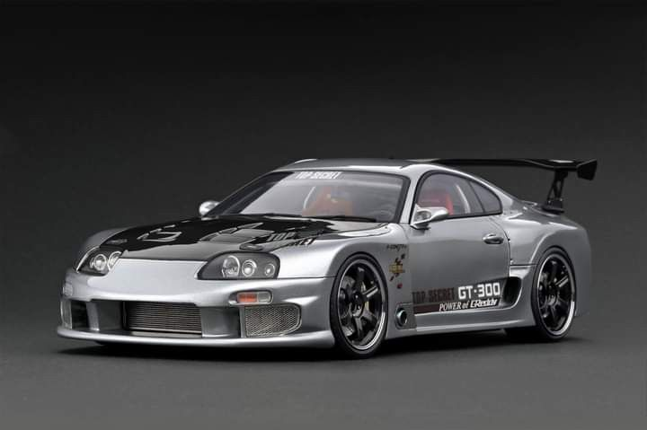
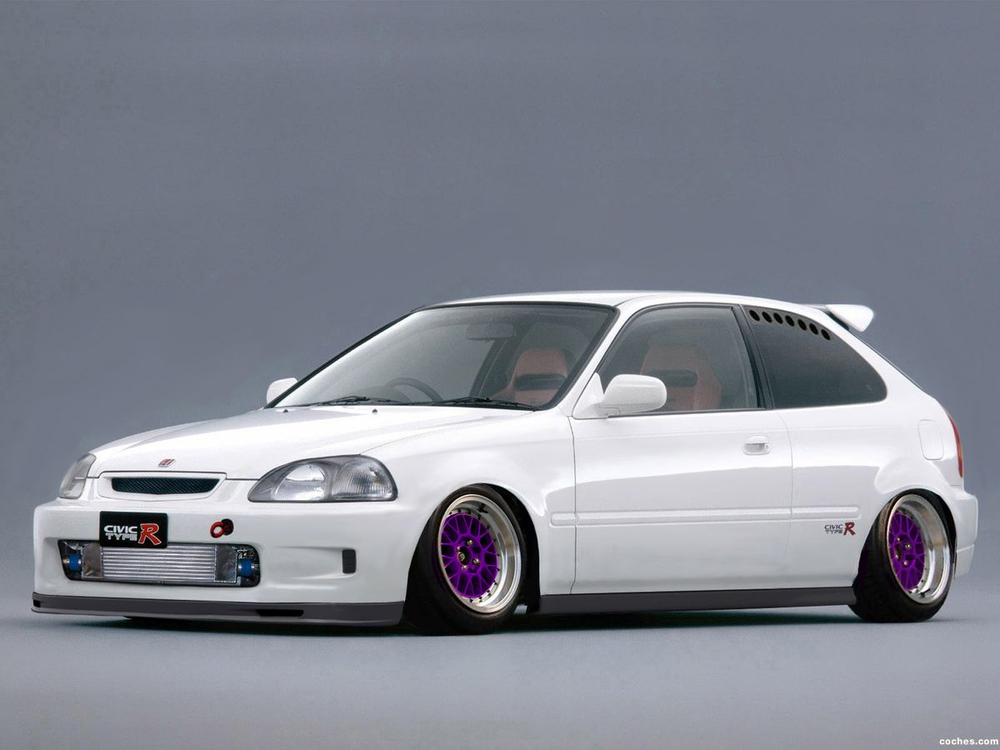
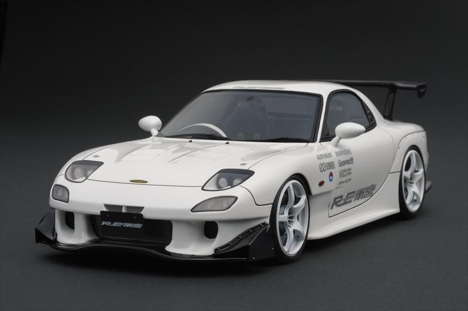

Collection · 9 คัน
JDM CAR
คอลเลกชันรถสปอร์ตญี่ปุ่นที่รวบรวมไว้ ตั้งแต่ Fairlady Z รุ่นแรกในปลายยุค 60 ไปจนถึง GT-R และ Supra ยุค 90 แต่ละคันมีรหัสตัวถัง เครื่องยนต์ และเรื่องราวของตัวเอง

รถโปรด · No.01
Skyline GT-R R34
GT-R รุ่นสุดท้ายของสายตัวถัง Skyline ใช้เครื่อง RB26DETT หกสูบเรียงเทอร์โบคู่ ระบบขับสี่ล้ออัจฉริยะ และสี Bayside Blue ที่กลายเป็นภาพจำของรุ่นนี้
ทั้งหมด
Skyline GT-R
Nissan · 1999

Silvia
Nissan · 1999

Fairlady Z
Nissan · 1969

Supra
Toyota · 1993

Sprinter Trueno
Toyota · 1983

Chaser
Toyota · 1996

NSX
Honda · 1990

Civic Type R
Honda · 1997

RX-7
Mazda · 1991